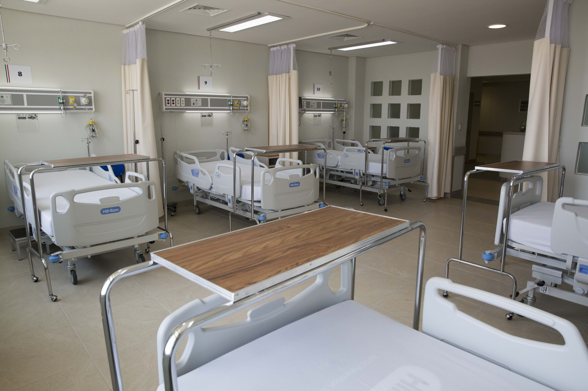
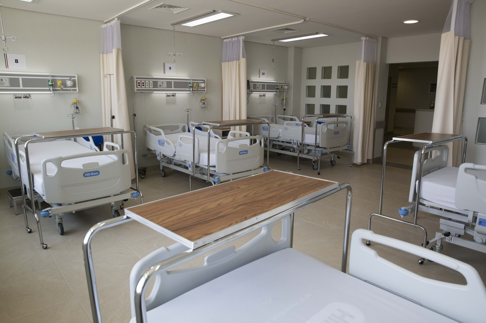

Activ - Med
Activ - Med
 Despre
Despre Galerie
Galerie 

 



ACTIV-MED își propune să valorifice experiența, maturitatea și devotamentul medicilor săi cu ajutorul tehnologiilor medicale de vârf.
Misiunea noastră este să dezvoltăm o cultură a sănătății în beneficiul omului, să tratăm fiecare pacient cu profesionalism și seriozitate și să ne punem ambiția în a fi eficienți în orice situație.
Valorile ACTIV-MED : Profesionalism, Seriozitate, Maturitate, Devotament - se regăsesc în fiecare dintre cabinetele noastre, sunt ușor de recunoscut în fiecare medic și prezente în orice procedură medicală.